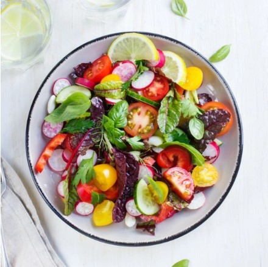
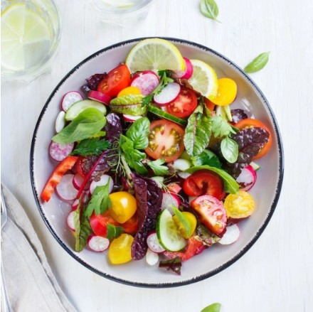

Recette du Jour
Découvrez notre recette rapide et délicieuse du jour.
 Voir la recette de notre saladePourquoi ce blog ?
Ce mini-site présente des recettes simples à réaliser pour débutants
Découvrez des idées simples et délicieuses.
Découvrez notre recette rapide et délicieuse du jour.
 Voir la recette de notre saladeCe mini-site présente des recettes simples à réaliser pour débutants